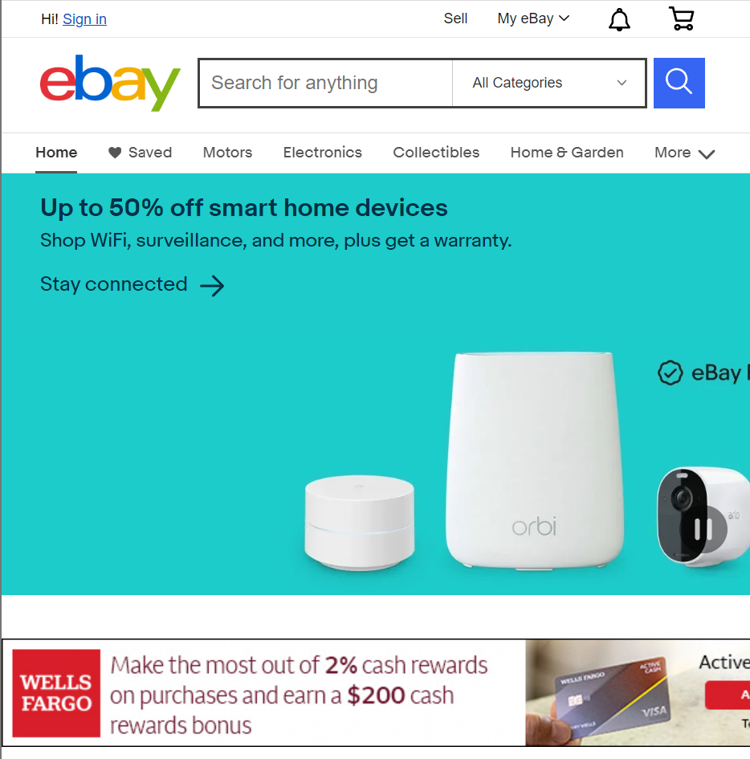
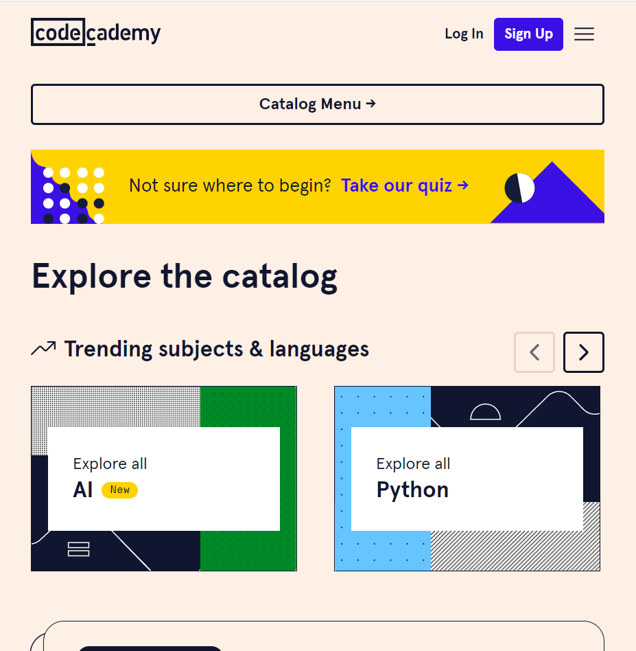

Repetition
Walmart
WalmartThe Walmart website makes great use of repetition. Using the same element structure, and changing nothing other then the CSS, they can use the same block of code many times on there home page. They also make use of repetition by keeping the header and footer the same between the many pages they have so one does not have to
White Spacing
Ebay
Ebay Ebay is a great example of white spacing. Spacing between each element adds meaning to the expirence while allowing the user to navigate the website easily.
Contrast
CodeCademy
CodeCademy Using background and forground colors along with element styling, the codecademy website is sharp and appealing to the human eye, all while using adequate border styling to each part of the page so that the objects draw attention to themselfs in rapid succession for a discriptive vist